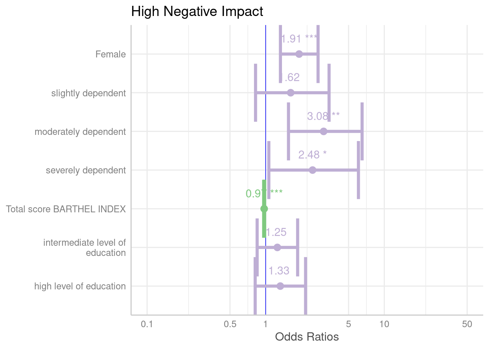

Plotting Estimates (Fixed Effects) of Regression Models
Daniel Lüdecke
2024-05-13
Source:vignettes/plot_model_estimates.Rmd
plot_model_estimates.Rmd## Install package "strengejacke" from GitHub (`devtools::install_github("strengejacke/strengejacke")`) to load all sj-packages at once!This document describes how to plot estimates as forest plots (or dot
whisker plots) of various regression models, using the
plot_model() function. plot_model() is a
generic plot-function, which accepts many model-objects, like
lm, glm, lme,
lmerMod etc.
plot_model() allows to create various plot tyes, which
can be defined via the type-argument. The default is
type = "fe", which means that fixed effects (model
coefficients) are plotted. For mixed effects models, only fixed effects
are plotted by default as well.
library(sjPlot)
library(sjlabelled)
library(sjmisc)
library(ggplot2)
data(efc)
theme_set(theme_sjplot())Fitting a logistic regression model
First, we fit a model that will be used in the following examples. The examples work in the same way for any other model as well.
# create binary response
y <- ifelse(efc$neg_c_7 < median(na.omit(efc$neg_c_7)), 0, 1)
# create data frame for fitting model
df <- data.frame(
y = to_factor(y),
sex = to_factor(efc$c161sex),
dep = to_factor(efc$e42dep),
barthel = efc$barthtot,
education = to_factor(efc$c172code)
)
# set variable label for response
set_label(df$y) <- "High Negative Impact"
# fit model
m1 <- glm(y ~., data = df, family = binomial(link = "logit"))Plotting estimates of generalized linear models
The simplest function call is just passing the model object as argument. By default, estimates are sorted in descending order, with the highest effect at the top.
plot_model(m1)
The “neutral” line, i.e. the vertical intercept that indicates no
effect (x-axis position 1 for most glm’s and position 0 for most linear
models), is drawn slightly thicker than the other grid lines. You can
change the line color with the vline.color-argument.
plot_model(m1, vline.color = "red")
Sorting estimates
By default, the estimates are sorted in the same order as they were
introduced into the model. Use sort.est = TRUE to sort
estimates in descending order, from highest to lowest value.
plot_model(m1, sort.est = TRUE)Another way to sort estimates is to use the
order.terms-argument. This is a numeric vector, indicating
the order of estimates in the plot. In the summary, we see that “sex2”
is the first term, followed by the three dependency-categories (position
2-4), the Barthel-Index (5) and two levels for intermediate and high
level of education (6 and 7).
summary(m1)
#>
#> Call:
#> glm(formula = y ~ ., family = binomial(link = "logit"), data = df)
#>
#> Coefficients:
#> Estimate Std. Error z value Pr(>|z|)
#> (Intercept) 0.700232 0.576715 1.214 0.224682
#> sex2 0.649136 0.186186 3.486 0.000489 ***
#> dep2 0.485259 0.361498 1.342 0.179480
#> dep3 1.125130 0.361977 3.108 0.001882 **
#> dep4 0.910194 0.441774 2.060 0.039368 *
#> barthel -0.029802 0.004732 -6.298 3.02e-10 ***
#> education2 0.226525 0.200298 1.131 0.258081
#> education3 0.283600 0.249327 1.137 0.255346
#> ---
#> Signif. codes: 0 '***' 0.001 '**' 0.01 '*' 0.05 '.' 0.1 ' ' 1
#>
#> (Dispersion parameter for binomial family taken to be 1)
#>
#> Null deviance: 1122.16 on 814 degrees of freedom
#> Residual deviance: 939.77 on 807 degrees of freedom
#> (93 observations deleted due to missingness)
#> AIC: 955.77
#>
#> Number of Fisher Scoring iterations: 4Now we want the educational levels (6 and 7) first, than gender (1),
followed by dependency (2-4)and finally the Barthel-Index (5). Use this
order as numeric vector for the order.terms-argument.
plot_model(m1, order.terms = c(6, 7, 1, 2, 3, 4, 5))Estimates on the untransformed scale
By default, plot_model() automatically exponentiates
coefficients, if appropriate (e.g. for models with log or logit link).
You can explicitley prevent transformation by setting the
transform-argument to NULL, or apply any
transformation by using a character vector with the function name.
plot_model(m1, transform = NULL)
plot_model(m1, transform = "plogis")
Showing value labels
By default, just the dots and error bars are plotted. Use
show.values = TRUE to show the value labels with the
estimates values, and use show.p = FALSE to suppress the
asterisks that indicate the significance level of the p-values. Use
value.offset to adjust the relative positioning of value
labels to the dots and lines.
plot_model(m1, show.values = TRUE, value.offset = .3)
Labelling the plot
As seen in the above examples, by default, the plotting-functions of
sjPlot retrieve value and variable labels if the data
is labelled, using the sjlabelled-package.
If the data is not labelled, the variable names are used. In such cases,
use the arguments title, axis.labels and
axis.title to annotate the plot title and axes. If you want
variable names instead of labels, even for labelled data, use
"" as argument-value, e.g. axis.labels = "",
or set auto.label to FALSE.
Furthermore, plot_model() applies case-conversion to all
labels by default, using the snakecase-package.
This converts labels into human-readable versions. Use
case = NULL to turn case-conversion off, or refer to the
package-vignette of the snakecase-package for further
options.
data(iris)
m2 <- lm(Sepal.Length ~ Sepal.Width + Petal.Length + Species, data = iris)
# variable names as labels, but made "human readable"
# separating dots are removed
plot_model(m2)
# to use variable names even for labelled data
plot_model(m1, axis.labels = "", title = "my own title")
Pick or remove specific terms from plot
Use terms resp. rm.terms to select specific
terms that should (not) be plotted.
# keep only coefficients sex2, dep2 and dep3
plot_model(m1, terms = c("sex2", "dep2", "dep3"))
# remove coefficients sex2, dep2 and dep3
plot_model(m1, rm.terms = c("sex2", "dep2", "dep3"))Standardized estimates
For linear models, you can also plot standardized beta coefficients,
using type = "std" or type = "std2". These two
options differ in the way how coefficients are standardized.
type = "std2" plots standardized beta values, however,
standardization follows Gelman’s (2008) suggestion, rescaling the
estimates by dividing them by two standard deviations instead of just
one.
plot_model(m2, type = "std")
Bayesian models (fitted with Stan)
plot_model() also supports stan-models fitted with the
rstanarm or brms packages. However,
there are a few differences compared to the previous plot examples.
First, of course, there are no confidence intervals, but uncertainty intervals - high density intervals, to be precise.
Second, there’s not just one interval range, but an inner
and outer probability. By default, the inner probability is
fixed to .5 (50%), while the outer probability is specified
via ci.lvl (which defaults to .89 (89%) for
Bayesian models). However, you can also use the arguments
prob.inner and prob.outer to define the
intervals boundaries.
Third, the point estimate is by default the median, but can
also be another value, like mean. This can be specified with the
bpe-argument.
if (require("rstanarm", quietly = TRUE)) {
# make sure we apply a nice theme
library(ggplot2)
theme_set(theme_sjplot())
data(mtcars)
m <- stan_glm(mpg ~ wt + am + cyl + gear, data = mtcars, chains = 1)
# default model
plot_model(m)
# same model, with mean point estimate, dot-style for point estimate
# and different inner/outer probabilities of the HDI
plot_model(
m,
bpe = "mean",
bpe.style = "dot",
prob.inner = .4,
prob.outer = .8
)
}
Tweaking plot appearance
There are several options to customize the plot appearance:
- The
colors-argument either takes the name of a valid colorbrewer palette (see also the related vignette),"bw"or"gs"for black/white or greyscaled colors, or a string with a color name. -
value.offsetandvalue.sizeadjust the positioning and size of value labels, if shown. -
dot.sizeandline.sizechange the size of dots and error bars. -
vline.colorchanges the neutral “intercept” line. -
width,alphaandscaleare passed down to certain ggplot-geoms, likegeom_errorbar()orgeom_density_ridges().
plot_model(
m1,
colors = "Accent",
show.values = TRUE,
value.offset = .4,
value.size = 4,
dot.size = 3,
line.size = 1.5,
vline.color = "blue",
width = 1.5
)